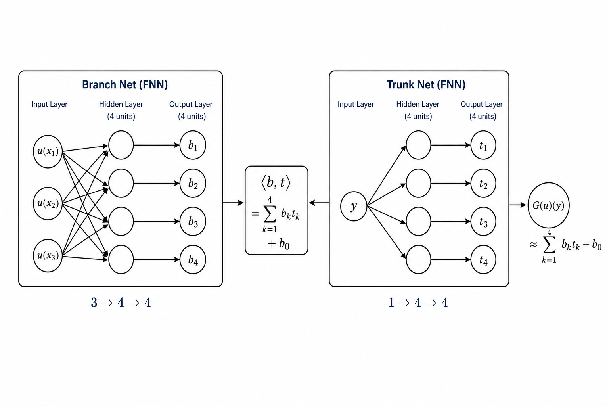
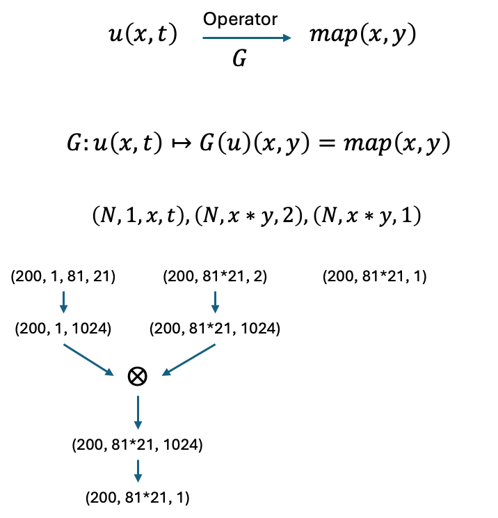

학습 노트 · ODE → Operator Learning
미분방정식과 DeepONet
적분형 초기값 문제부터 DeepONet의 입출력·연산자 표기까지, 대화에서 다룬 핵심만 수식과 함께 정리한 노트입니다.
1. 초기값 문제
다음 1계 미분방정식(초기값 문제)을 생각합니다.
양변을 $0$부터 $x$까지 적분하면
\[ \int_0^x \frac{dv}{ds}\,ds = \int_0^x u(s)\,ds \]왼쪽은 $v(x)-v(0)$이고 $v(0)=0$이므로 해는
즉 이 문제의 해 연산자는 적분 연산자입니다. $u$가 적분 가능하면 이 해는 유일합니다.
2. 공업수학 예제
다음 초기값 문제를 풀어라.
\[ \frac{dv}{dx} = 2x, \quad 0 \le x \le 1, \quad v(0)=0 \](일반형에서 $u(x)=2x$인 경우)
풀이
- 양변을 $0$부터 $x$까지 적분 \[ \int_0^x \frac{dv}{ds}\,ds = \int_0^x 2s\,ds \]
-
왼쪽은 초기조건으로 정리
왼쪽 $= v(x)-v(0)=v(x)$ - 오른쪽 적분 \[ v(x) = \big[s^2\big]_0^x = x^2 \]
검산
- 미분: $v'(x)=2x$ → 미분방정식 만족
- 초기조건: $v(0)=0$ → 만족
3. 왜 $\frac{dv}{dx}$가 $\frac{dv}{ds}$가 되나?
위끝(도착점)을 이미 $x$로 쓰고 있는데, 적분 변수까지 같은 글자 $x$를 쓰면
위끝의 $x$(고정)와 $dx$의 $x$(움직임)가 같은 글자라 헷갈림
그래서 움직이는 변수만 $s$로 바꿉니다.
\[ \int_0^x \frac{dv}{ds}\,ds = \int_0^x 2s\,ds \]- $x$ — 답을 구하는 최종 위치 (고정)
- $s$ — $0$에서 $x$까지 따라가는 중간 점 (움직임)
- $ds$ — 그 중간 점을 따라 조금 이동
$\frac{dv}{ds}=2s$는 “점 $s$에서의 기울기가 $2s$”라는 뜻이고, 원래 $\frac{dv}{dx}=2x$와 같은 법칙입니다. $t$, $\tau$ 등 아무 글자나 써도 됩니다.
4. DeepONet을 이 문제에 적용하면
DeepONet은 함수 → 함수 연산자 $G$를 학습합니다. 이 문제에서 $G$는 적분입니다.
\[ v(y) = G(u)(y) = \int_0^y u(s)\,ds \]입출력
$=[u(x_1),\ldots,u(x_m)]$
평가하고 싶은 점
$\approx G(u)(y)$
| 기호 | 역할 |
|---|---|
| $x$ (센서 좌표) | 입력 함수 $u$를 샘플링하는 위치들 |
| $y$ (쿼리 좌표) | 출력 $v$를 알고 싶은 위치 |
숫자 예시
$u(x)=2x$, 센서 $x=0,\,0.5,\,1$ 이면
\[ [u(0),\,u(0.5),\,u(1)] = [0,\,1,\,2] \]Trunk에 $y=0.7$을 넣으면
\[ v(0.7)=\int_0^{0.7} 2s\,ds = (0.7)^2 = 0.49 \]같은 $u$에 $y$만 바꿔 여러 번 평가하면 함수 $v$의 여러 점을 얻을 수 있습니다.
일반 NN과의 차이
- 일반 회귀: 하나의 고정된 $u$에 대해 $x\mapsto v(x)$만 배움
- DeepONet: 여러 $u$에 대해 연산자 $u\mapsto v$ 전체를 배움 (새 $u$에도 바로 $v(y)$ 예측)
5. 왜 $v(y)$를 $G(u)(y)$라고 쓰나?
$G(u(x), y)$가 더 직관적으로 보일 수 있지만, 수학적으로 정확한 쪽은 $G(u)(y)$입니다.
두 단계로 읽기
아직 점 $y$는 등장하지 않습니다.
표기 $u(x)$는 보통 “한 점에서의 값”처럼 보이므로, $G(u(x), y)$는 함수 전체를 넣는지 한 값을 넣는지 모호합니다.
| 표기 | 관점 | 비고 |
|---|---|---|
| $G(u)(y)$ | 수학 (연산자) | 권장. 의미가 단계적으로 분명함 |
| $G(u(x), y)$ | 직관 | $u(x)$가 모호해서 덜 씀 |
| $\hat{G}([u(x_i)], y)$ | 구현/네트워크 | 실제로 넣는 입력 형태 |
6. $\hat{G}([u(x_i)], y)$ 기호 풀이
이 표기는 진짜 연산자 $G$가 아니라, 컴퓨터/신경망이 계산하는 근사 함수를 가리킵니다.
모자($\,\hat{\,}\,$)는 근사를 뜻합니다. 진짜 적분 연산자는 $G$, DeepONet이 학습한 네트워크는 $\hat{G}$입니다.
\[ \hat{G}(\cdot)\approx G(\cdot) \]연속 함수 $u$ 전체를 그대로 넣을 수 없어서, 고정 센서점에서의 값 벡터로 대신 넣습니다. (Branch 입력)
예: $x_i=0,0.5,1$이고 $u(x)=2x$이면 $[0,1,2]$
출력 $v$를 평가하고 싶은 위치입니다. (Trunk 입력) 네트워크 출력은 그 점에서의 스칼라 값입니다.
7. DeepONet 근사식과 bias $b_0$
교재/슬라이드에서 자주 보는 완전한 형태는 다음과 같습니다.
앞에서 간단히 쓴 식은 bias를 생략한 버전입니다.
각 기호가 하는 일
| 기호 | 역할 |
|---|---|
| $b_k(u(x_1),\ldots,u(x_m))$ | Branch net의 $k$번째 출력. 입력 함수를 센서점 $m$개에서 샘플한 벡터를 받아 “이 함수 $u$의 계수”를 만듦 |
| $t_k(y)$ | Trunk net의 $k$번째 출력. 평가 위치 $y$만 보고 “그 위치의 기저 함수값”을 만듦 |
| $\sum_{k=1}^{p} b_k\, t_k$ | 계수와 기저의 내적. $u$에 따라 달라지는 부분 + $y$에 따라 달라지는 부분을 합쳐 $v(y)$를 근사 |
| $b_0$ | 출력 bias (보통 학습 가능한 스칼라 상수). $u$나 $y$에 직접 의존하지 않고 전체에 더해지는 상수항 |
$b_0$는 무엇인가?
일반 신경망의 bias와 같은 역할입니다. 예를 들어 선형층 $Wx+b$에서 $b$가 출력을 위아래로 옮기듯, DeepONet에서도 합 $\sum b_k t_k$만으로는 맞추기 어려운 전체적인 상수 오프셋을 $b_0$가 담당합니다.
- $b_0$는 보통 숫자 하나 (스칼라)
- Branch/Trunk 입력과 무관하게 항상 더해짐
- 학습 중 gradient로 함께 업데이트되는 trainable parameter
없어도 되는가?
이론적으로는 $b_0$ 없이도 근사할 수 있는 경우가 많습니다. Trunk가 거의 상수인 성분 $t_j(y)\approx c$를 만들고, Branch가 그에 맞는 계수 $b_j(u)$를 학습하면 사실상 상수항을 흉내 낼 수 있기 때문입니다.
실용적으로는 $b_0$를 넣는 편이 거의 항상 낫습니다. 상수 오프셋을 명시적으로 두면 학습이 쉽고, 원 논문·대부분 구현도 출력에 bias를 둡니다. 그래서 제가 처음에 쓴 짧은 식은 “구조의 핵심(branch·trunk 내적)”만 강조한 것이고, 완전한 식에는 $b_0$가 있는 것이 맞습니다.
적분 문제에 대입하면
목표 연산자가 $G(u)(y)=\displaystyle\int_0^y u(s)\,ds$일 때,
\[ \hat{G}(u)(y) = \sum_{k=1}^{p} b_k\!\big([u(x_i)]_{i=1}^{m}\big)\, t_k(y) + b_0 \;\approx\; \int_0^y u(s)\,ds \]여기서 $b_0$는 “모든 $u$, 모든 $y$에 공통으로 더해지는 상수”라서, 예를 들어 데이터 전체의 평균 오프셋을 맞추는 데 쓰입니다. $y=0$에서 $v(0)=0$이어야 하는 문제라면, 네트워크가 $b_0$와 $\sum b_k t_k(0)$이 함께 $0$ 근처가 되도록 학습하게 됩니다. (physics constraint를 loss에 넣을 수도 있음)
정리
- 짧은 식 $\sum b_k t_k$ : DeepONet의 본체
- $+\,b_0$ : 학습을 돕는 출력 bias
- 없어도 근사는 가능하지만, 있는 쪽이 표준
8. Branch·Trunk를 FNN으로 완전히 전개
Branch와 Trunk를 둘 다 평범한 완전연결망(FNN)으로 보고, 아주 작은 크기로 수식을 끝까지 풀어 씁니다.
- Branch: $3 \times 4 \times 4$ (입력 3 → 은닉 4 → 출력 4)
- Trunk: $1 \times 4 \times 4$ (입력 1 → 은닉 4 → 출력 4)
- 따라서 latent 차원 $p=4$, 센서 개수 $m=3$
- 활성화 $\sigma$는 은닉층에만 사용 (예: $\tanh$ 또는 ReLU), 출력층은 선형

8.1 입력
센서 위치 $x_1,x_2,x_3$에서 입력 함수를 샘플합니다.
\[ \mathbf{u} = \begin{bmatrix} u(x_1)\\ u(x_2)\\ u(x_3) \end{bmatrix} \in \mathbb{R}^3, \qquad y\in\mathbb{R} \]8.2 Branch Net ($3\times 4\times 4$)
가중치·bias를 모두 명시하면 다음과 같습니다.
성분별로 쓰면 $h^{(b)}_i=\sigma\!\big(W^{(b1)}_{i1}u(x_1)+W^{(b1)}_{i2}u(x_2)+W^{(b1)}_{i3}u(x_3)+c^{(b1)}_i\big)$, $i=1,2,3,4$.
즉 $b_k=\sum_{i=1}^{4} W^{(b2)}_{ki}\, h^{(b)}_i + c^{(b2)}_k$, $k=1,2,3,4$. 이 $\mathbf{b}$가 앞에서 말한 $b_k(u(x_1),\ldots,u(x_m))$ 벡터입니다.
8.3 Trunk Net ($1\times 4\times 4$)
성분별: $h^{(t)}_j=\sigma\!\big(W^{(t1)}_{j1}\, y + c^{(t1)}_j\big)$, $j=1,2,3,4$.
$t_k=\sum_{j=1}^{4} W^{(t2)}_{kj}\, h^{(t)}_j + c^{(t2)}_k$. 이 $\mathbf{t}$가 $t_k(y)$ 벡터입니다.
8.4 최종 결합
한 줄로 합치면 “Branch FNN의 출력 벡터”와 “Trunk FNN의 출력 벡터”의 내적에 스칼라 bias를 더한 것이 DeepONet입니다.
8.5 숫자로 한 번 통과시켜 보기
이해를 위해 활성화는 $\sigma(z)=\mathrm{ReLU}(z)=\max(z,0)$로 두고, 아주 단순한 가중치를 가정합니다. (실제 학습값이 아니라 계산 연습용)
$u(x)=2x$, 센서 $x_1=0,\;x_2=0.5,\;x_3=1$, 쿼리 $y=0.7$
\[ \mathbf{u} = \begin{bmatrix} 0\\ 1\\ 2 \end{bmatrix}, \qquad y=0.7 \]참값: $v(0.7)=\displaystyle\int_0^{0.7}2s\,ds=0.49$
Branch 전개
\[ W^{(b1)}\mathbf{u} = \begin{bmatrix}0\\1\\2\\3\end{bmatrix} \Rightarrow \mathbf{h}^{(b)} = \mathrm{ReLU}\!\big([0,1,2,3]^{\mathsf{T}}\big) = \begin{bmatrix}0\\1\\2\\3\end{bmatrix} \Rightarrow \mathbf{b} = \begin{bmatrix}0\\1\\2\\3\end{bmatrix} \]Trunk 전개
\[ W^{(t1)}y = \begin{bmatrix}0.7\\0.7\\0.7\\0.7\end{bmatrix} \Rightarrow \mathbf{h}^{(t)} = \begin{bmatrix}0.7\\0.7\\0.7\\0.7\end{bmatrix} \Rightarrow \mathbf{t} = \begin{bmatrix}0.7\\0.7\\0.7\\0.7\end{bmatrix} \]결합
\[ \hat{G}(u)(0.7) = 0\cdot 0.7 + 1\cdot 0.7 + 2\cdot 0.7 + 3\cdot 0.7 + 0 = 4.2 \]참값 $0.49$와는 전혀 다릅니다. 당연합니다 — 가중치를 임의로 둔 한 번의 forward일 뿐이기 때문입니다. 학습이란 바로 이 $W^{(\cdot)},\mathbf{c}^{(\cdot)},b_0$를 바꿔서 많은 $(u,y)$ 쌍에 대해 $\hat{G}(u)(y)\approx v(y)$가 되게 만드는 과정입니다.
8.6 파라미터 개수 (이 작은 예시)
| 부분 | 개수 |
|---|---|
| Branch $W^{(b1)},\mathbf{c}^{(b1)}$ | $4\cdot 3 + 4 = 16$ |
| Branch $W^{(b2)},\mathbf{c}^{(b2)}$ | $4\cdot 4 + 4 = 20$ |
| Trunk $W^{(t1)},\mathbf{c}^{(t1)}$ | $4\cdot 1 + 4 = 8$ |
| Trunk $W^{(t2)},\mathbf{c}^{(t2)}$ | $4\cdot 4 + 4 = 20$ |
| 출력 bias $b_0$ | $1$ |
| 합계 | 65 |
9. 학습 배치 텐서 예제
앞 장의 “한 함수·한 점” forward와 달리, 실제 학습에서는 여러 함수와 여러 평가점을 한 번에 넣습니다.
| 텐서 | Shape | 의미 |
|---|---|---|
| Branch 입력 | $N\times m = 150\times 100$ | 함수(샘플) $N=150$개, 센서 $m=100$개 |
| Trunk 입력 | $100\times 1$ | 평가 위치 $y$가 100개 ($y\in\mathbb{R}$) |
| Output | $150\times 100$ | $G(u^{(i)})(y_j)$를 모두 모은 행렬 |
9.1 $N=150$은 무엇인가?
여기서 $N$은 training data 개수입니다. 즉 서로 다른 입력 함수
\[ u^{(1)},\; u^{(2)},\; \ldots,\; u^{(150)} \]가 150개 있다는 뜻입니다. (2D 이미지 한 장이 아니라, 함수 샘플 150개)
9.2 Branch의 100과 Trunk의 100
이론상 두 개의 100은 같을 필요가 없습니다.
- Branch의 100: 입력 함수를 샘플하는 센서 좌표
- Trunk의 100: 출력을 읽고 싶은 쿼리 좌표
이 예제에서는 둘 다 같은 좌표 \(x\in\{1,2,\ldots,100\}\)으로 맞췄습니다.
따라서 알고 싶은 것은 각 함수 $u^{(i)}$에 대해 $G(u^{(i)})$를 같은 점 $1,\ldots,100$에서 평가한 값입니다.
9.3 Output이 $150\times 100$인 이유
\[ \text{Output}_{ij} \approx G\!\big(u^{(i)}\big)(x_j), \qquad i=1,\ldots,150,\; j=1,\ldots,100 \]샘플마다·점마다 스칼라를 하나씩 돌리는 대신, 행렬 한 장으로 모아 GPU/프레임워크가 배치 연산(batched computation)으로 빠르게 계산하기 위함입니다.
- $N=150$이 전체 데이터면 → 풀 배치(full batch)
- 전체 중 일부만 떼서 넣으면 → 미니배치(mini-batch)
9.4 네트워크 안에서의 흐름
8장의 스칼라 식 $\mathbf{b}^{\mathsf{T}}\mathbf{t}+b_0$를 함수 축·점 축으로 쌓아 행렬 곱으로 쓴 형태입니다.
9.5 작은 예제와의 차이
| 8장 (작은 예제) | 9장 (배치 예제) | |
|---|---|---|
| 함수 수 | 1개 | $N=150$ |
| 센서/쿼리 | $m=3$, $y$ 1개 | $m=100$, $y$ 100개 (같은 격자) |
| 출력 | 스칼라 $v(y)$ | 행렬 $150\times 100$ |
| 목적 | 수식 전개 | 학습 시 배치 텐서 |
10. 2D DeepONet 예제
1D 적분 연산자 예제와 달리, 여기서는 2D 장 → 2D 장을 DeepONet으로 근사합니다.
- 입력 \(u\): \(81\times 21\) displacement 측정장 (가로 81, 세로 21 픽셀)
- 출력 \(G(u)\): 같은 크기 \(81\times 21\) material property map (Young’s modulus 또는 damage map)

10.1 Branch
Branch 입력은 2D displacement 이미지 \(u\in\mathbb{R}^{81\times 21}\)입니다. CNN(Conv2D + ReLU + MaxPool) → Flatten → Dense로 계수 벡터 \(\mathbf{b}=[b_1,\ldots,b_p]^{\mathsf{T}}\)를 만듭니다.
10.2 Trunk 입력 shape
Trunk는 “좌표 격자 이미지”를 CNN에 넣는 방식이 아니라, 각 격자점의 \((x,y)\) 좌표 쌍을 모아 넣는 형태가 자연스럽습니다. 실제 텐서 예:
| 축 | 크기 | 의미 |
|---|---|---|
| 0 | $200$ | 배치 크기 $N$ |
| 1 | $81\times 21=1701$ | 격자점을 1열로 펼친 쿼리 점 개수 |
| 2 | $2$ | 각 점의 $(x,y)$ 좌표 쌍 |
10.3 작은 격자로 보면
shape가 \(N,\;3\times 2,\;2\)이면 점 6개가 예를 들어 다음 순서로 들어갑니다.
\[ (1,1),\; (1,2),\; (2,1),\; (2,2),\; (3,1),\; (3,2) \]각 원소는 길이 2인 좌표 벡터이고, Trunk는 점마다 기저 \(t_k(x,y)\)를 만들어 \(\mathbf{t}\in\mathbb{R}^{p}\) (또는 배치·점 축을 포함한 텐서)를 출력합니다.
10.4 결합과 출력
모든 격자점 \((x,y)\)에 대해 위 값을 구한 뒤 \(81\times 21\)로 reshape하면 material property map이 됩니다.
10.5 9장 1D 배치 예제와의 차이
| 9장 (1D 배치) | 10장 (2D 장) | |
|---|---|---|
| 입력 $u$ | 1D 함수의 센서 벡터 | $81\times 21$ displacement 장 |
| Branch | FNN | CNN (+ Dense) |
| Trunk 입력 | $y\in\mathbb{R}$ (또는 $m\times 1$) | $(N,\;81\cdot 21,\;2)$ 좌표 쌍 |
| 출력 | $N\times m$ (점별 스칼라 행렬) | $81\times 21$ property map (배치면 $N\times 81\times 21$) |
11. 한눈에 정리
- ODE $\frac{dv}{dx}=u(x),\;v(0)=0$의 해는 $v(x)=\displaystyle\int_0^x u(s)\,ds$
- $s$는 적분용 더미 변수일 뿐, 규칙은 그대로
- DeepONet은 이 적분 연산자 $G:u\mapsto v$를 학습
- 데이터: 입력 $(u\text{의 샘플},\,y)$ → 출력 $v(y)$
- 수학 표기 $G(u)(y)$, 구현 표기 $\hat{G}([u(x_i)], y)$
- 완전한 출력: $\sum_{k=1}^{p} b_k([u(x_i)])\,t_k(y)+b_0$
- Branch·Trunk는 각각 FNN이고, 마지막에 내적(+bias)으로 결합
- 학습 시에는 $N$개 함수 × 여러 $y$를 배치 행렬로 한 번에 계산
- 2D 예제: displacement 장 → property map, Trunk는 $(N, n_{\mathrm{pts}}, 2)$ 좌표 입력